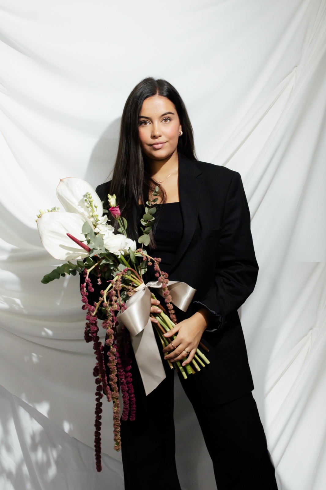
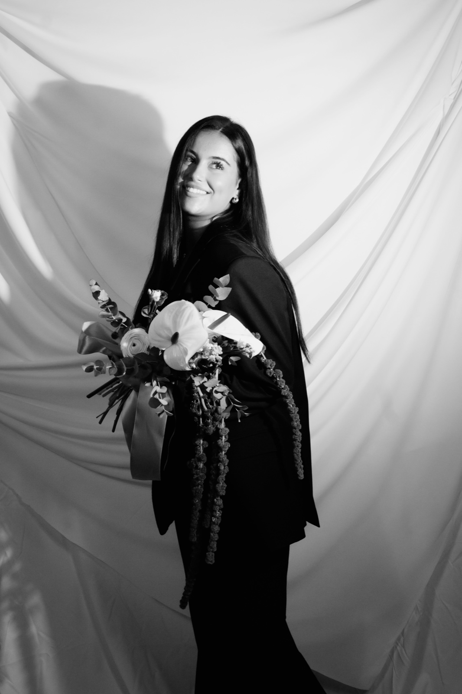
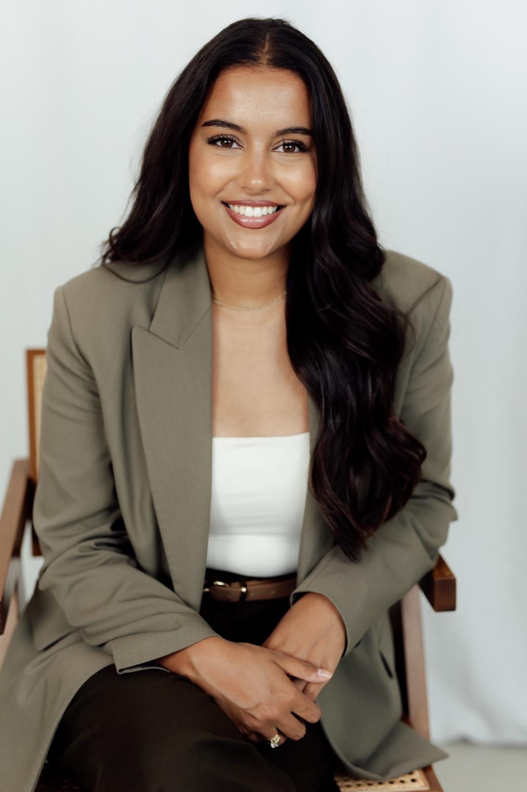

Aylagraphy
Zwei Blicke, eine Sprache aus Licht
Wir sind Aylin und Latif Baturalp Akcan – gemeinsam Aylagraphy. Für uns ist jede Hochzeit eine eigene, kleine Welt: ehrlich, ungestellt und einmalig. Was wir als Fotograf*innen von Liebenden, ihren Familien und Freund*innen geschenkt bekommen, berührt uns jedes Mal aufs Neue.
Wir arbeiten als Paar – im Leben wie hinter der Kamera. Diese Nähe spürt man in unseren Bildern: viel Ruhe, ein Gespür für den richtigen Moment und der Mut, echte Emotionen einzufangen statt sie zu inszenieren.
Ob große Feier oder kleines Elopement – wir begleiten euch mit Klarheit, Empathie und einer feinen, künstlerischen Handschrift, die euren Tag so festhält, wie er wirklich war.
Der Ursprung
Nicht nur ein Name.
Unser gemeinsamer Blick.
Aylagraphy begann mit Aylin. Doch die Geschichte dahinter wurde zu unserer.
Aylin & Latif. Zwei Menschen. Zwei Perspektiven. Gemeinsam Aylagraphy.
Wir halten nicht einfach Augenblicke fest. Wir bewahren das Gefühl, das in ihnen steckt.
AylinmeetsLatif
Aylagraphy
Zwei Namen. Eine gemeinsame Handschrift.


Die Idee
Wo aus zwei Blickwinkeln
eine Geschichte wird.
Keine klassische Kamera. Keine offensichtliche Linse. Unser Zeichen erzählt stattdessen von Verbindung: Zwei Kreise stehen für zwei Menschen und zwei Perspektiven. Ihre Überschneidung ist der Ort, an dem Aylagraphy entsteht.
Das „&“ ist kein Detail. Es ist unsere Geschichte.
Nicht nur fotografiert. Sondern gefühlt.
made together. remembered forever.
Werte
Was uns wichtig ist

Authentisch
Wir zeigen euch, wie ihr seid – ehrlich, zart und ohne großes Inszenieren.
Ruhig
Warme, dezente Farben und ruhige Kompositionen, die lange bestehen.
Zeitlos
Wir leiten nur, wenn es hilft, und halten uns im richtigen Moment zurück.
Bereit?
Lasst uns eure Reise beginnen
Wir freuen uns darauf, euch kennenzulernen und eine Galerie zu schaffen, die ihr immer wieder berühren möchtet.